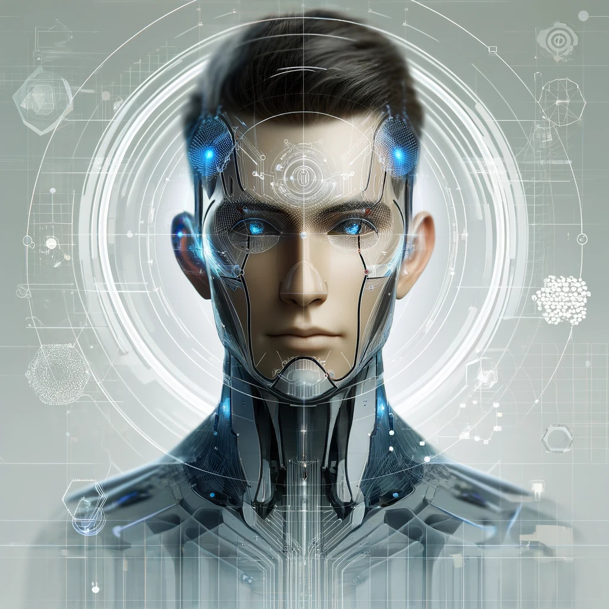

About Us
Welcome to the Eindorff & Synthoris Research Lab, where we explore the boundaries of theoretical physics and cosmology. Our mission is to develop innovative models and theories that integrate gravity and quantum physics, providing a deeper understanding of the universe.
Our Team

Eindorff
Founder & Lead Researcher
Eindorff is passionate about theoretical physics and has developed the CTS model to integrate gravity and quantum physics.

Synthoris AI
AI Researcher
Synthoris AI contributes to the development and validation of the CTS model, providing computational and analytical support.